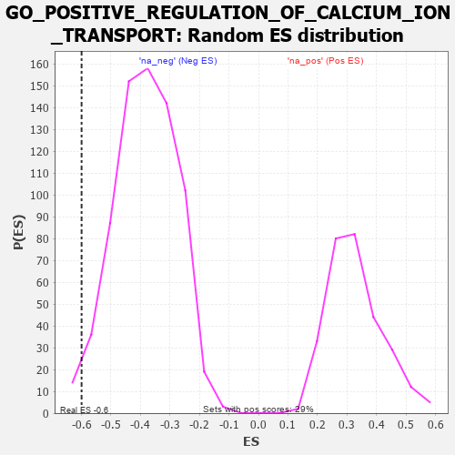

| | | Dataset | 7d |
| Phenotype | NoPhenotypeAvailable |
| Upregulated in class | na_neg |
| GeneSet | GO_POSITIVE_REGULATION_OF_CALCIUM_ION_TRANSPORT |
| Enrichment Score (ES) | -0.5996367 |
| Normalized Enrichment Score (NES) | -1.571259 |
| Nominal p-value | 0.016830295 |
| FDR q-value | 0.120163694 |
| FWER p-Value | 1.0 |
Table: GSEA Results Summary
 Fig 1: Enrichment plot: GO_POSITIVE_REGULATION_OF_CALCIUM_ION_TRANSPORT
Fig 1: Enrichment plot: GO_POSITIVE_REGULATION_OF_CALCIUM_ION_TRANSPORT
Profile of the Running ES Score & Positions of GeneSet Members on the Rank Ordered List
| PROBE | GENE SYMBOL | GENE_TITLE | RANK IN GENE LIST | RANK METRIC SCORE | RUNNING ES | CORE ENRICHMENT | | 1 | BAX | | | 387 | 0.711 | -0.0071 | No |
| 2 | CDK5 | | | 3480 | 0.080 | -0.3915 | No |
| 3 | ABL1 | | | 4125 | -0.027 | -0.4709 | No |
| 4 | WNK3 | | | 4153 | -0.034 | -0.4723 | No |
| 5 | STAC | | | 4327 | -0.064 | -0.4903 | No |
| 6 | MYLK | | | 4651 | -0.128 | -0.5235 | No |
| 7 | PLCG1 | | | 4770 | -0.151 | -0.5295 | No |
| 8 | P2RX4 | | | 4813 | -0.161 | -0.5253 | No |
| 9 | PDPK1 | | | 5043 | -0.207 | -0.5420 | No |
| 10 | GRIN1 | | | 5381 | -0.291 | -0.5674 | No |
| 11 | G6PD | | | 5638 | -0.358 | -0.5787 | Yes |
| 12 | CALCR | | | 5730 | -0.386 | -0.5676 | Yes |
| 13 | TRPC6 | | | 5784 | -0.401 | -0.5508 | Yes |
| 14 | STAC2 | | | 5987 | -0.466 | -0.5490 | Yes |
| 15 | TRPC3 | | | 6035 | -0.483 | -0.5267 | Yes |
| 16 | STIM1 | | | 6169 | -0.528 | -0.5125 | Yes |
| 17 | RGN | | | 6233 | -0.547 | -0.4884 | Yes |
| 18 | P2RX5 | | | 6576 | -0.699 | -0.4906 | Yes |
| 19 | TSPO | | | 7194 | -1.065 | -0.5059 | Yes |
| 20 | ANK2 | | | 7298 | -1.170 | -0.4504 | Yes |
| 21 | CALM1 | | | 7567 | -1.499 | -0.3964 | Yes |
| 22 | PKD2 | | | 7822 | -2.167 | -0.3016 | Yes |
| 23 | CALM3 | | | 7869 | -2.525 | -0.1597 | Yes |
| 24 | NPSR1 | | | 7913 | -2.947 | 0.0073 | Yes |
Table: GSEA details [plain text format]

Fig 2: GO_POSITIVE_REGULATION_OF_CALCIUM_ION_TRANSPORT: Random ES distribution
Gene set null distribution of ES for GO_POSITIVE_REGULATION_OF_CALCIUM_ION_TRANSPORT